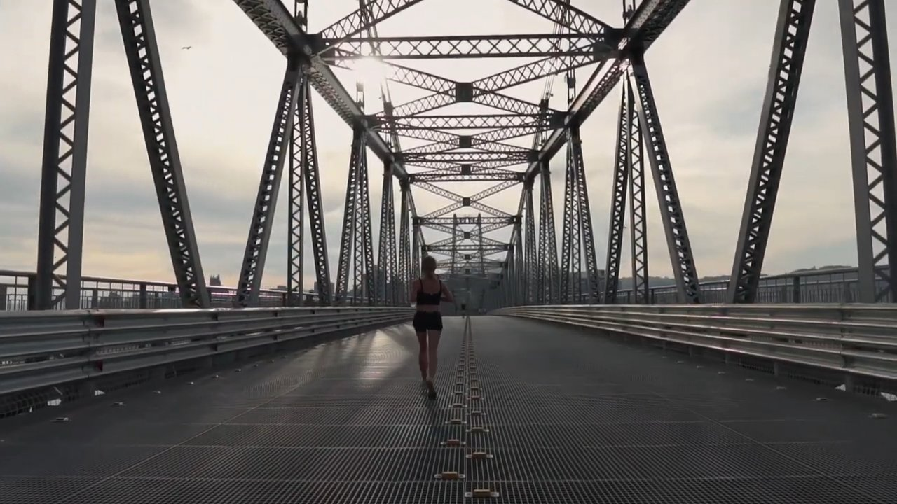

EM OBRAS
Format: Documentary, 23 min 41 s
Year: 2021
Role: Editor
Production: Contexto Filmes. Written and directed by Gustavo Zinder
Logline
Em Obras: o documentário sobre a restauração da Ponte Hercílio Luz [In Works: the documentary about the restoration of the Hercílio Luz Bridge] follows the restoration of Santa Catarina's most important architectural monument, from the first service order in 2006 to 2019, with its deadlines and costs.
About the project
The Hercílio Luz Bridge, which opened in 1926, links the island of Florianópolis to the mainland. Em Obras tells the story of its long and controversial restoration through interviews with the engineer who supervised the work, a prosecutor from the state audit office, the city's secretary of mobility and planning, and representatives of engineering and civic associations, alongside archive footage and aerial images.
The film premiered on Contexto Filmes' YouTube channel on 13 May 2021, the bridge's 95th anniversary. In May 2022 it was screened at the cinema of the Centro Integrado de Cultura (CIC) in Florianópolis, followed by a public debate.
How it was made
I did not film it; I came in at the edit. It was a low-budget production and the audio had technical problems, which we overcame in post-production. I edited the film with the director, Gustavo Zinder. The soundtrack is by Modernas Ferramentas Científicas de Exploração.

Screenings
- 2021: online premiere, Contexto Filmes YouTube channel, 13 May (95th anniversary of the bridge)
- 2022: screening and debate, Centro Integrado de Cultura (CIC), Florianópolis